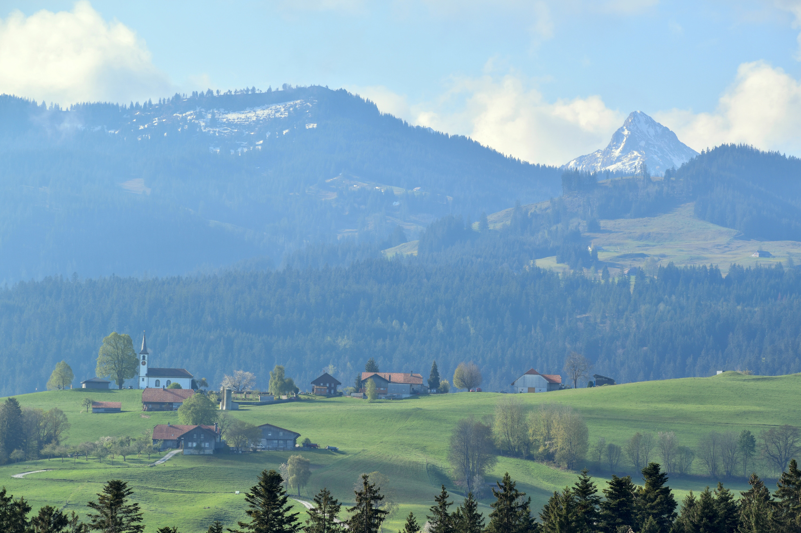

David Plüss zum 60. Geburtstag
Oben auf dem Hügel steht sie, die Rüschegger Kirche im Schwarzenburgerland. Das Gebiet gehört seit 2012 zum regionalen Naturpark Gantrisch. Auf dessen Webseite finden sich Wegweiser zu Ausstellungen, Veranstaltungen, Museen, Baukultur, Kulturerbe und Kulturorten. Zum letzteren gehören die Kirchen des Gebiets, darunter die Pfarrkirche Rüschegg auf dem Rüschegghügel.
Kirche Rüschegg auf dem Rüschegghügel. (Foto: Andreas Köhler-Andereggen)
Das Gästebuch, das im Eingangsbereich der Rüschegger Kirche ausliegt,
gibt einen Einblick, wer die Kirche besucht. Manche Besuchende
hinterlassen ein biblisches Wort, einen Dank für erfahrene Hilfe. Sie
formulieren Bitten um Begleitung durch Gott und durch Menschen. Das
geschieht in unterschiedlichen Sprachen: Deutsch, Schweizer Mundart,
Spanisch, Hebräisch, Englisch, Französisch. Und häufig schwärmen
Besuchende von der Kirche selbst als einem besonderen Ort, der ihnen mit
seiner Stille, seiner Lage und seiner Heimeligkeit guttue. David Plüss
beschreibt in seinem Liturgik-Lehrbuch die säkulare Sakralität, die
Menschen heute mit kirchlichen Räumen verbindet. Kirchen werden als
Oasen im Alltag entdeckt, als Anders-Orte, in denen die Welt und die
Zeit anders ticken. Die Besuchenden müssen selbst nicht religiös sein,
um diese Anders-Orte erfahren zu können. Auch die Kirche Rüschegg
scheint von aussen und innen zu wirken. Die besondere Lage auf dem
grünen Hügel mit Aussicht nach Norden in den Jura und nach Süden auf die
Gantrischkette, das häufig zu hörende Gebimmel der Kuhglocken, der helle
schlichte Kirchenraum, all das wirkt.
Die Kirche in Rüschegg weist noch eine weitere Besonderheit auf. Die
Frontwand ist mit einem Holzschnitt des Künstlers Franz Gertsch
(1930–2022) bedeckt, das dieser 2009 der Kirchgemeinde schenkte. Das
dreiteilige Gemälde, das Triptychon «Schwarzwasser II», ist mit einer
Länge von insgesamt sechs Metern und eine Höhe von 1.85m unübersehbar.
Abgebildet ist der Fluss Schwarzwasser als ein vom Wind aufgerautes
Gewässer. In diesem stillen und ruhigen Kirchenraum setzt es einen
Kontrapunkt der Bewegung. Kultur trifft Natur in Rüschegg auf
vielfältige Weise.
Kirche Rüschegg, Aussenansicht. (Foto: Andreas Köhler-Andereggen)
Nicht nur Kirche mit Aussicht, sondern sichtbare Kirche
Der Rüschegghügel ist von verschiedenen Punkten des Gemeindegebietes gut
sichtbar und Namensgeber der Gemeinde. Diese besteht aus verschiedenen
Streusiedlungen. In der ersten Hälfte des 19. Jahrhunderts bestand die
Bevölkerung aus Hofbauern und -bäuerinnen sowie zwangseingebürgerten
armen Familien, die als Kesselflicker, Korbflechterinnen oder Hausierer
unterwegs waren. Mit der Einbürgerung verband sich der Versuch, Menschen
einem festen (Rechts-)Ort zuzuordnen mit gleichzeitiger sozialer
Kontrolle. Politisch und kirchlich gehörte das Gebiet zur Gemeinde
Guggisberg. Nachdem die Kantone durch die Mediationsverfassung 1803 ihre
Souveränität zurückgewonnen hatten, übernahm 1804 der Kanton Bern als
Verwalter des Kirchengutes die Auszahlung der Pfarrlöhne, eine Regelung,
die erst 2020 mit dem neuen Landeskirchengesetz aufgehoben wurde. Durch
die Lohnauszahlung gab es neue Möglichkeiten. Pfarrpersonen hatten ein
gesichertes Einkommen und mussten nicht mehr selbst den Zehnten
eintreiben. Entlegenere Berggemeinden erhielten einen Zuschuss. Für ein
weit verzweigtes Gebiet wie Rüschegg waren das neue Perspektiven. 1808
wird von Guggisberg aus eine Helferei in Rüschegg eingerichtet. 1810
entwirft Johann Daniel Osterrieth (1768–1839) eine Kirche in einem
schlicht klassizistischen Stil, die 1813 fertiggestellt wird, zunächst
ohne Kirchturm, der 1901 folgt. Die Kirche wird zusammen mit einem
Oberstufengebäude und einem Pfarrhaus um 1818 zu einem Ensemble. Die
Aufgaben der Kirche waren sittliche und verbanden sich mit dem
Konservatismus der Restaurationszeit. Andererseits erhielt die Gegend um
den Rüschegghügel durch den Bau der Kirche eine Aufwertung. Die Gegend
wurde als eigener Ort sichtbar, mit einer Kirche im Dorf.
In der Gemeinde Guggisberg lebten in der Mitte des 19. Jahrhunderts so
viele arme Menschen, dass die finanziellen Probleme überhandnahmen. Da
bei zwei eigenständigen Gemeinden der Kanton mehr Gelder zahlen musste,
trennte sich 1860 Guggisberg vom Gebiet Rüschegg. Die Kirche in Rüschegg
wurde zur Pfarrkirche. In Rüschegg selbst gab es in der Bevölkerung
grosse finanzielle Unterschiede. Während reichere Bauernfamilien im
oberen Gemeindeteil lebten, gab es im unteren Gemeindeteil Menschen in
tiefer Armut. Rüschegg wurde bekannt als ärmste Gemeinde des Kantons.
Erst durch kantonale Unterstützung im Jahr 1937 und dem eingeführten
Finanzausgleich 1954 verbesserte sich die finanzielle Situation langsam.
Kirche Rüschegg, Taufstein mit dem Holzschnitt «Schwarzwasser II» von Franz Gertsch, entstanden 1993/1994, vom Künstler im Jahr 2009 gestiftet. (Foto: Andreas Köhler-Andereggen)
Sich der linearen Zeitmessung entziehen
Trotz aufkommendem Tourismus blieben die Bodenpreise in Rüschegg erschwinglich. Franz Gertsch (1930–2022), der 1972 mit seiner Teilnahme an der documenta V in Kassel einem breiteren Publikum bekannt wurde und bisher im Raum Bern lebte, konnte für seine Familie mit vier Kindern 1976 ein grösseres Haus erwerben. Der Ort zeigte Wirkung auf sein Schaffen. Der Rhythmus der Natur nahm ihn immer mehr ein, die Vielfältigkeit von Naturmotiven begeisterte ihn, Rüschegg wurde zur Motivwelt. 1988 entsteht als erstes Landschaftsbild der Holzschnitt Rüschegg. 1990 bei einem Spaziergang in unmittelbarer Nähe seines Hauses fotografierte Gertsch das Lichtspiel beim Fluss Schwarzwasser, woraus dann eines seiner bekanntesten Werke entsteht, das Triptychon «Schwarzwasser I», ein in sich ruhendes Bild. Während Fotografien den Moment festhalten, kommt beim Holzschnitt von Gertsch eine andere Zeitlichkeit ins Spiel. Die Kunsthistorikerin Angelika Affentranger-Kirchrath beschreibt es als eine Übersetzung des Augenblicks in eine Dauer, die sich der linearen Zeitmessung zu entziehen scheint. Der Kirche in Rüschegg stiftet Gertsch das Triptychon «Schwarzwasser II». Statt eines ruhigen Wasserbildes wie bei «Schwarzwasser I» zeigt es aufgewühltes Wasser, einen Fluss, der in Bewegung ist und in dem Steine feste Orte bleiben. Wiederum ist es nicht ein Augenblick, der festgehalten ist, sondern dauerhaft geht es um Bewegung und Fixpunkte, um Festes und Fliessendes. Es ist ein lebendiges Naturbild, das in den Dialog mit dem Interieur der Kirche und ihrer Helligkeit tritt, mit den Besuchenden der Kirche wie dann auch mit den Gottesdiensten, die in Rüschegg gefeiert werden. Es wirkt mit am Anders-Ort, transformiert das Lineare in ein Stück Dauerhaftigkeit, die als Bewegung gekennzeichnet ist. Und trifft damit einen Grundgedanken reformierter Theologie: Reformierte Kirche hat sich stetig zu reformieren, bleibt Kirche in Bewegung. Auch daran erinnert das Triptychon «Schwarzwasser II» in der Kirche Rüschegg, als einem Ort, wo Kultur auf Natur trifft.
Andreas Köhler-Andereggen leitet an der Theologischen Fakultät der Universität Bern die KOPTA, die Koordinationsstelle für praktikumsbezogene theologische Ausbildung, eine fakultäre Einheit, die unter anderem für das Praktische Semester und das Lernvikariat verantwortlich ist. Seit 2015 übernimmt er regelmässig Stellvertretungsgottesdienste in Rüschegg.
Weitere Artikel von {{ author.author }} finden Sie hier:
Zur Vertiefung:
- Affentranger-Kirchrath, Angelika: Franz Gertsch. Rüschegg, Zürich 2020.
- Deeg, Alexander/Plüss, David: Liturgik. Lehrbuch Praktische Theologie, Gütersloh 2021, 423–437.
- Kohli, Werner/Stalder, Ernst Wilhelm: Festschrift zum hundertjährigen Bestehen der Gemeinde Rüschegg 1860-1960, Rüschegg 21980.